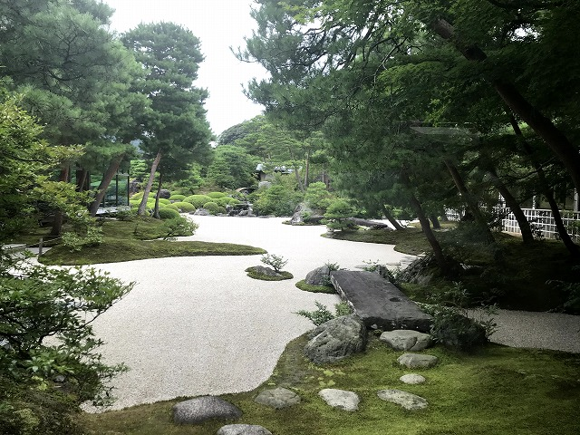

島根旅行
2020/07/17-2020/07/18
島根旅！食べ物よりも観光やアクティビティを楽しむぞ！ 今回はおススメ スポットを2つ紹介します！
おススメ SPOT ①
足立美術館 （あだちびじゅつかん）
… 日本一の庭園が楽しめる美術館
住所： 島根県安来市古川町３２０

数年前から、行ってみたかった足立美術館についに！
コロナ禍ということもあり、人が少なく非常にゆっくり楽しむことができました。
絵と思えるような美しさで、後の予定がなければ何時間も見ていたいほど落ち着く空間でした。
通常時は混雑必至ですが、もう一度行きたい美術館です！

おススメ SPOT ②
鞆が浦遊覧伝馬船
（ともがうらゆうらんてんません）
… 伝馬船による島めぐり
住所：島根県大田市仁摩町馬路1830-6島根旅行が決まってから、観光地を探している中で大田市の観光サイトで発見し、 夏の海って絶対に気持ちいいし面白そう！と予約をとって行ってきました！
伝馬船という小さなボートだからこそ、より近くに寄ってみることができるので迫力が凄かったです。
今回は波が高くいけない場所もありましたが、大満足の40分でした。
天候によって予約していても運航できない場合もありますが、
ぜひ皆におススメしたい場所です！